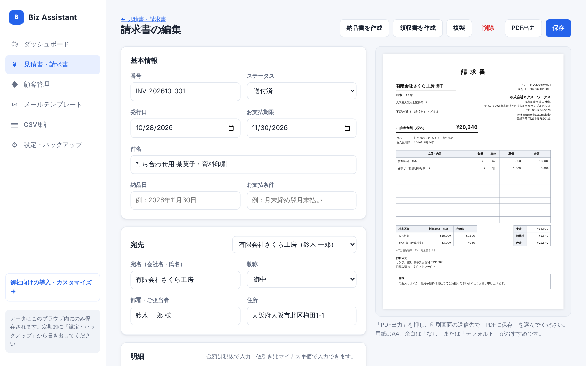
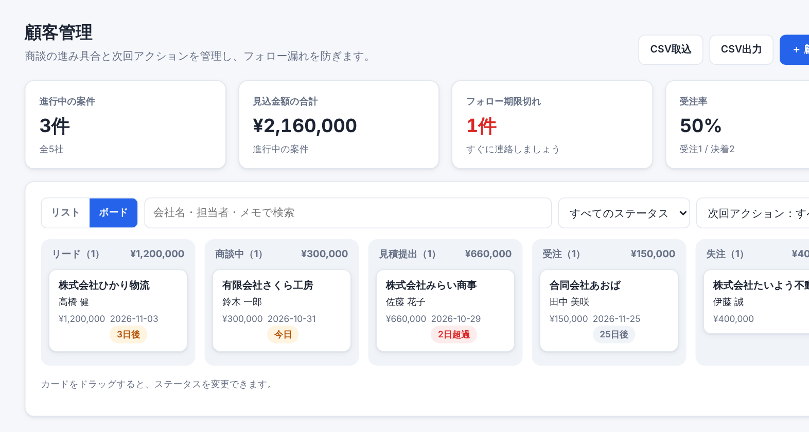
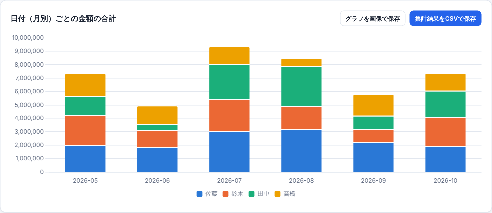

B
Biz Assistant 使い方ガイド
見積書・請求書・顧客管理をブラウザだけで
目次
- はじめに（動作環境と大切なこと）
- 最初の設定
- 品目マスタの登録
- 顧客の登録・取り込み
- 見積書の作成とPDF保存
- 請求書・納品書・領収書の作成
- 顧客管理と次回アクション
- メールテンプレート
- CSV・Excelの集計
- バックアップと復元
- 困ったときは
1. はじめに
| 動作環境 | Windows または Mac のパソコン／Google Chrome または Microsoft Edge（最新版） |
|---|---|
| インストール | 不要です。お渡ししたURL（またはフォルダ内の index.html）をブラウザで開くだけで使えます。 |
| 費用 | 月額費用はかかりません。 |
大切なこと：データの保存場所
入力したデータは、お使いのパソコンのブラウザの中だけに保存されます。外部のサーバーには送信されないため安全ですが、次の点にご注意ください。
入力したデータは、お使いのパソコンのブラウザの中だけに保存されます。外部のサーバーには送信されないため安全ですが、次の点にご注意ください。
- ブラウザの「閲覧履歴データの削除」でサイトデータを消すと、データも消えます。
- 別のパソコンや別のブラウザでは、同じデータは表示されません。
- そのため、週に1回程度のバックアップ（10章）をおすすめします。
よく使う画面は、ブラウザのブックマークに登録しておくと便利です（Ctrl＋D、Macは ⌘＋D）。
2. 最初の設定
左メニューの 「設定・バックアップ」 を開き、次の項目を入力して 「保存する」 を押します。ここで入力した内容が、すべての帳票に自動で印字されます。
| 項目 | 説明 |
|---|---|
| 会社名・代表者名・住所・電話・メール | 帳票の右上に表示されます。 |
| 登録番号 | インボイス制度の登録番号（T＋13桁）。お持ちの場合は必ず入力してください。 |
| 振込先 | 請求書に表示されます。改行もそのまま反映されます。 |
| 印影（角印）画像 | 任意。背景が透明なPNG画像がおすすめです。 |
| 消費税の端数処理 | 通常は「切り捨て」のままで問題ありません。 |
| あなたの名前 | メールテンプレートの署名に使われます。 |
3. 品目マスタの登録
よく使う商品・サービスを登録しておくと、帳票の明細で品名を選ぶだけで、単価・単位・税率が自動で入ります。
- 「見積書・請求書」画面の右上にある 「品目マスタ」 を開きます。
- 「＋ 品目を追加」 を押し、品名・単位・単価（税抜）・税率を入力します。入力した内容は自動で保存されます。
- まとめて登録したい場合は、「CSV取込」 を使います。列名は「品名」「単位」「単価（税抜）」「税率」です。
💡 帳票を作ったあとに、明細の下の 「明細を品目マスタに登録」 を押すと、未登録の品目をまとめて追加できます。最初は普段どおり帳票を作るだけで、マスタが自然に揃っていきます。
4. 顧客の登録・取り込み
1件ずつ登録する
「顧客管理」→ 「＋ 顧客を追加」 を押し、会社名・担当者名などを入力して保存します。
Excelの顧客リストを取り込む
- 「顧客管理」で顧客が0件のときに表示される 「取込用CSVのひな形をダウンロード」 を押します（2回目以降は「CSV出力」で同じ形式のファイルを取得できます）。
- ひな形の列（会社名、部署、担当者名、メール、電話番号 など）に合わせて、Excelのデータを貼り付けます。「会社名」列は必須です。
- CSVまたはExcel形式で保存し、「CSV取込」 から選択します。
- 確認画面で件数を確かめて、「取り込む」 を押します。
5. 見積書の作成とPDF保存

- 「見積書・請求書」→ 「＋ 見積書」 を押します。番号は自動で付きます（例：Q-202611-001）。
- 宛先：右上の「顧客から選ぶ」で選ぶと、会社名・担当者・住所が自動で入ります。
- 明細：品名を入力（または品目マスタから選択）し、数量・単価・税率を入力します。
・金額は税抜で入力します。
・値引きは、単価をマイナスで入力します（例：-10000）。
・食品など軽減税率の品目は、税率を「8%※」にします。 - 右側のプレビューで仕上がりを確認し、「保存」 を押します。
- 「PDF出力」 を押すと印刷画面が開きます。送信先（プリンター）で 「PDFに保存」 を選び、保存します。
💡 印刷画面の設定：用紙サイズは A4、余白は 「なし」 または 「デフォルト」、「背景のグラフィック」にチェックを入れると、表の色もきれいに出ます。ファイル名は「見積書_番号_宛先」が自動で付きます。
6. 請求書・納品書・領収書の作成
宛先と明細を引き継いで、ワンクリックで次の帳票を作れます。
| 元の帳票 | 作れる帳票 | 自動で変わること |
|---|---|---|
| 見積書 | 請求書・納品書 | 請求書を作ると、見積書が「受注」になります |
| 請求書 | 納品書・領収書 | 領収書を作ると、請求書が「入金済」になります |
- 請求書：お支払期限は翌月末が初期値です。振込先が自動で印字されます。
- 領収書：「但し書き」に内容を入力します（例：Webサイト制作費）。税抜5万円以上の場合は、収入印紙の貼付欄が表示されます。
- 定期請求：保守費や顧問料など毎月同じ内容の請求書は、「毎月の定期請求にする」にチェックを入れて保存します。翌月以降、一覧の上に表示される 「今月分の定期請求書を作成」 を押すと、前回の内容で今月分の請求書がまとめて「下書き」で作られます。件名や品名の「2026年10月」「10月分」のような表記は、作成月に自動で置き換わります。
- 入金を確認したら、請求書のステータスを 「入金済」 にしてください。期限を過ぎても入金済になっていない請求書は、一覧とダッシュボードに「期限超過」と表示されます。
7. 顧客管理と次回アクション

- ステータス：リード → 商談中 → 見積提出 → 受注／失注。「ボード」表示ではカードをドラッグするだけで変更できます。
- 次回アクション：顧客の画面で「予定日」と「内容」を入力しておくと、当日や期限切れの予定がダッシュボードの「今日やること」に表示されます。
- 活動履歴：「＋ 記録する」で、電話・訪問・メールの内容を残せます。記録と同時に次回アクションも更新できます。
- 顧客の画面から、「見積書を作成」 や 「メールを作成」 にそのまま進めます。
8. メールテンプレート
- 左の一覧からテンプレートを選びます（お礼、見積送付、請求書送付、フォロー、入金のお礼、日程調整）。
- 右上の 「宛先の顧客を選ぶ」 で顧客を選ぶと、会社名・担当者名などが自動で差し込まれます。
- 黄色で表示されている
{{…}}は、まだ埋まっていない項目です。上の入力欄に内容を入れてください。 - 「件名をコピー」「本文をコピー」 で、お使いのメールソフトに貼り付けます。
💡 文面は自由に編集・追加できます。本文に
{{訪問日}} のように好きな名前を書くと、その項目の入力欄が自動で現れます。9. CSV・Excelの集計

- 「CSV集計」を開き、ファイルをドラッグ＆ドロップします（1行目は見出しにしてください）。
- 軸（何ごとに集計するか）、集計方法（合計・件数・平均など）、集計する値を選びます。日付の列は、月別・年別・曜日別にまとめられます。
- 内訳で「担当者」などを選ぶと、色分けしたクロス集計になります。
- 結果は 「集計結果をCSVで保存」（Excelでそのまま開けます）、グラフは 「グラフを画像で保存」 で保存できます。
読み込んだファイルは外部に送信されません。画面を閉じると、集計の内容は消えます。
10. バックアップと復元
バックアップ（週に1回がおすすめ）
- 「設定・バックアップ」→ 「すべてのデータを書き出す（JSON）」 を押します。
biz-assistant-backup-日付.jsonというファイルが保存されます。社内の共有フォルダやクラウドストレージに保管してください。
復元・別のパソコンへの移行
- 移行先のパソコンでツールを開き、「設定・バックアップ」→ 「バックアップから復元」 を押します。
- 保存しておいたJSONファイルを選びます。現在のデータはバックアップの内容に置き換わります。
11. 困ったときは
| こんなとき | 対処法 |
|---|---|
| データが消えてしまった | バックアップファイルから復元してください（10章）。ブラウザのシークレットモードでは、データは保存されません。 |
| PDFの表に色が付かない | 印刷画面の詳細設定で「背景のグラフィック」にチェックを入れてください。 |
| PDFが2ページに分かれる | 余白を「なし」にするか、倍率を「既定」にしてください。明細が多い場合は、備考を短くすると1ページに収まります。 |
| CSVが文字化けする | Shift_JIS・UTF-8のどちらにも対応しています。それでも化ける場合は、Excelで「CSV UTF-8」形式で保存し直してください。 |
| 「別のタブを閉じてください」と表示される | ツールを開いている他のタブをすべて閉じてから、再読み込みしてください（更新版の反映時に表示されることがあります）。 |
| 金額が1円ずれる | インボイス制度のルールに従い、消費税は税率ごとに合計してから端数処理しています。明細ごとに計算した場合と、1円程度ずれることがあります。 |
本ツールは帳票作成を補助するものです。税務上の判断については、必要に応じて税理士にご相談ください。